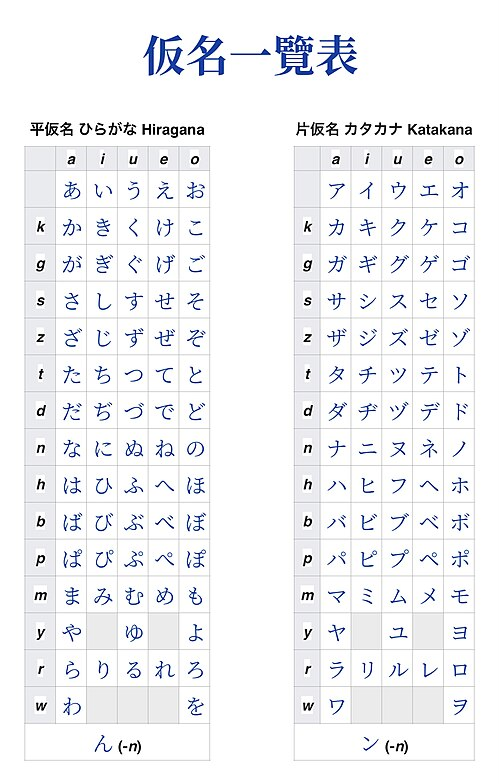

Breve historia del japonés
El idioma japonés pertenece a la familia de lenguas japónicas (conformada por dialectos japoneses y lenguas ryukyuenses como el okinawense). Abarca variedades lingüísticas locales (dialectos), a excepción de las lenguas ainu; y es el único sitio en donde se ha utilizado como primera o segunda lengua desde mediados del siglo XX.
Japón es un país caracterizado por sus montañas y valles, así como por pequeñas islas aisladas, lo cual ha dado origen a diversos dialectos en todo el archipiélago. Es común que sean mutuamente ininteligibles, es decir, que un dialecto no sea comprendido por personas que hablen otro. Vale la pena mencionar que las variedades del japonés se dividen en 3 grupos:
- Oriental
- Occidental
- Dialectos de Kyushu
"Mount Fuji, Japan" por
Wallboat
distribuida bajo
CC0 1.0

 .
.
Sistemas de escritura

"Kana" por
Cloimages
distribuida bajo
CC0 1.0

 .
.
El japonés incluye los siguientes fonemas:
- 5 vocales
- 16 consonantes
El primero tiene caracteres con una apariencia redondeada, mientras que el segundo se distingue por lucir más angular y por haber surgido a partir de la abreviatura de caracteres chinos.
Sin embargo, es importante considerar que a la fecha de hoy también se utilizan caracteres chinos (kanji), a pesar de su complejidad. Esto es debido a que existen muchas palabras homófonas y el uso de kanji permite diferenciarles visualmente. Además, es posible inferir el significado de palabras escritas en kanji gracias a la ideográfica de estos caracteres.